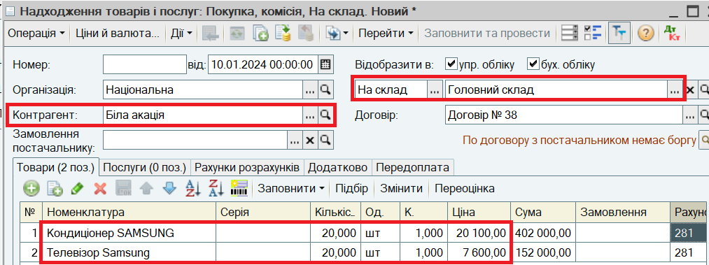
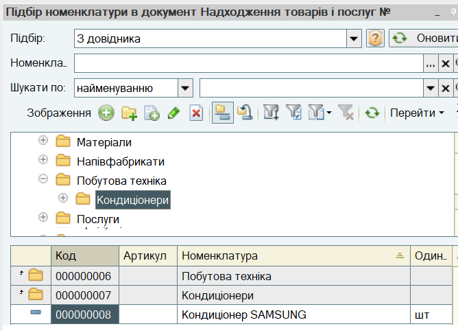
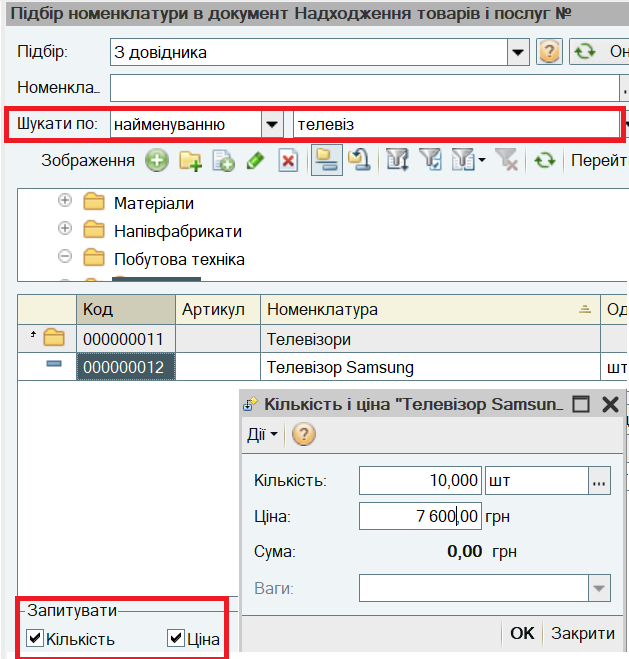
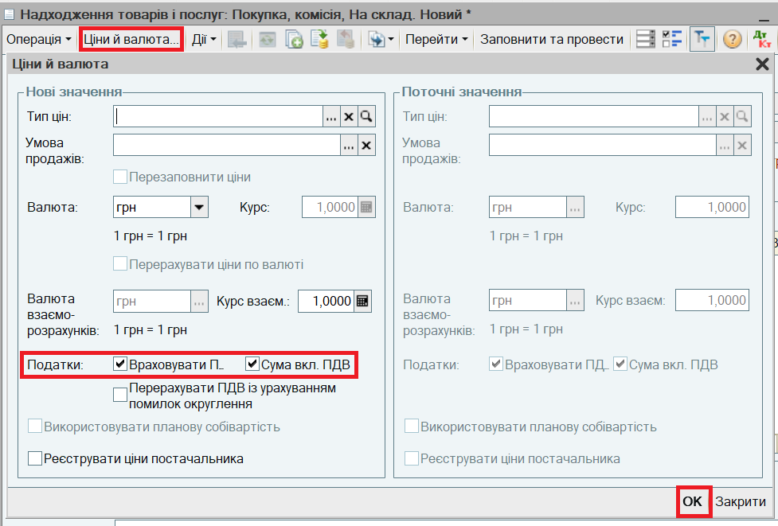

Надходження товарів
Надходження товарів від постачальника відображається документом Надходження товарів і послуг. В документ вводяться дані з прибуткової накладної, отриманої від постачальника.
1. Відкрийте список документів Надходження товарів і послуг. Для цього в меню Документи виберіть пункт Купівлі, підпункт Надходження товарів і послуг.
2. Створіть новий документ і заповніть його:

ПОРАДА
Для заповнення реквізиту достатньо почати вводити найменування відповідного елемента довідника або його код. Для деяких довідників можливе введення також за іншими ідентифікаторами, наприклад Контрагента - за Кодом ЄДРПОУ.
Якщо ж ви не пам'ятаєте найменування, то потрібно скористатися кнопкою   або клавішею F4 для вибору елемента довідника. Також, зазвичай, список елементів відкривається для вибору за клавішею Enter, якщо реквізит документа не заповнений. або клавішею F4 для вибору елемента довідника. Також, зазвичай, список елементів відкривається для вибору за клавішею Enter, якщо реквізит документа не заповнений.
|
ПОРАДА
Для швидкого заповнення табличної частини можна викликати список номенклатури в режимі підбору (кнопка Підбор над табличною частиною документа). Подвійним кликом миші по вибраних записах, можна перенести ці данні в табличну частину документа. |

ПРИМІТКА.
При підборі товарів можна використовувати швидкий пошук за частиною найменування (артикулу, коду) товару - Шукати по. Якщо в діалоговому вікні підбору встановити прапори Кількість і Ціна, то інформацію про кількість і ціну товару можна задавати безпосередньо під час підбору товарів у документ

ВАЖЛИВО.
Якщо у прибутковій накладній вказані ціни без ПДВ, потрібно зняти прапор Сума вкл. ПДВ у діалоговому вікні, яке відкривається за кнопкою Ціни й валюта. Після зняття прапору діалогове вікно закривається за кнопкою ОК.
Зазначення сум і ставок ПДВ регулюється прапором Враховувати ПДВ у тому ж діалоговому вікні. По умовчанню для організації-платника ПДВ прапор заповнений.

На закладці Додатково зазначте Вх. номер та Вх. дату прибуткової накладної постачальника.
Збереження і проведення документа здійснюється за кнопкою ОК в нижній частині форми документа.
Наступний розділ: "Формування нових цін продажу при зміні цін постачальника"